Set the cell plot node size scale
cell_node_scale_size.RdSets the output sizes for a column mapped with cell_plot(size = ...).
Numeric and integer columns are scaled continuously. Character and factor
columns are treated as categorical levels.
Usage
cell_node_scale_size(object, sizes = c(2, 6), limits = NULL)Arguments
- object
A
cell_plotrecipe.- sizes
Non-negative relative sizes. Supply two ordered values for a continuous or interpolated categorical range, or a named vector of per-level values when the mapped column is categorical.
- limits
Optional scale limits for a ranged mapping. Supply two ordered numeric values. Named categorical sizes cannot be combined with
limits.
Details
A length-2 sizes vector is an output range. build_cell_plot() normalizes
continuous values, and interpolated categorical levels, to that interval.
Rows with missing values in a mapped size column are dropped at build time
with a warning.
A named sizes vector assigns one relative size to each category, for
example sizes = c(a = 1, b = 2, c = 3). Named values must cover every
observed level and are not interpolated. limits belong to the ranged
scale and cannot be combined with named sizes.
Sizes are backend-neutral relative units. Each renderer converts the values
to native units: ggplot2 uses millimetres, Plotly and rgl use marker
diameters in pixels, and base R uses cex. The contract guarantees
consistent ordering and relative range, not pixel-perfect physical equality.
This modifier requires a size mapping and is optional; the default output
range is c(2, 6). One node size shared by every point is set with
cell_plot(size = <number>) instead. Because cell_node_depth() scales one
node size by depth, it cannot be combined with this modifier.
For projected 3D data, ggplot2 applies perspective sizing from the depth
mapping only when no size column is mapped. A size mapping always wins.
Plotly and rgl ignore depth.
See also
cell_plot(), cell_node_depth()
Other cell-plot-modifiers:
cell_annotation(),
cell_grid(),
cell_illuminate(),
cell_node_depth(),
cell_node_scale_alpha(),
cell_node_scale_color(),
cell_theme()
Examples
se <- ReadPNA_Seurat(minimal_pna_pxl_file())
#> ✔ Created a <Seurat> object with 5 cells and 158 targeted surface proteins
se <- LoadCellGraphs(se, cells = colnames(se)[4], verbose = FALSE) |>
ComputeLayout(layout_method = "spectral")
#> ℹ Computing layouts for 1 graphs
cell_graph <- CellGraphs(se)[[4]]
layout_data <- FetchLayoutData(cell_graph, vars = "CD82", layout_method = "spectral_3d") |>
# Downsample to speed up tests
dplyr::slice_sample(n = 5000)
cell_plot(layout_data, size = CD82) |>
cell_node_scale_size(sizes = c(0.1, 3))

# One size per category
layout_data |>
dplyr::mutate(group = dplyr::if_else(CD82 > median(CD82), "high", "low")) |>
cell_plot(size = group) |>
cell_node_scale_size(sizes = c(low = 1, high = 4))
